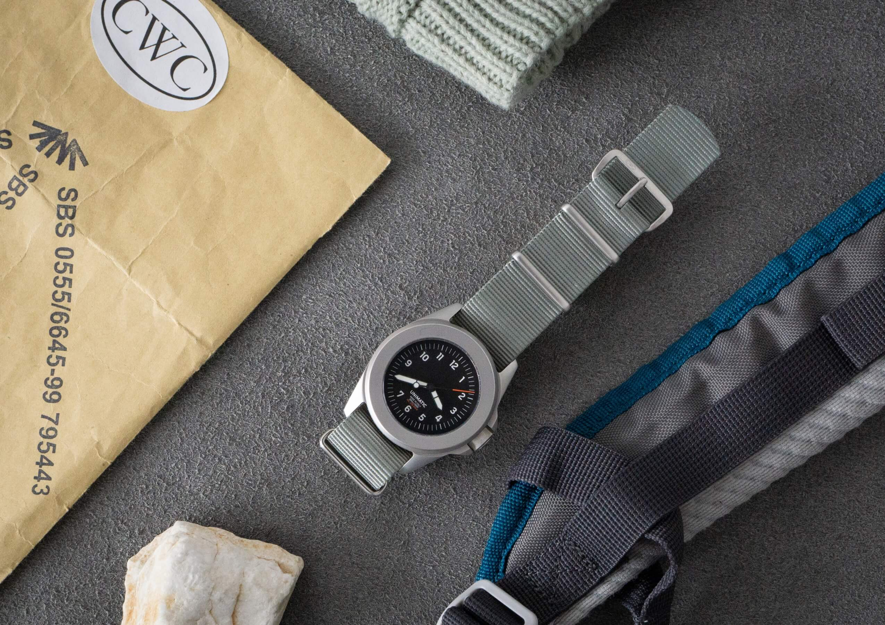
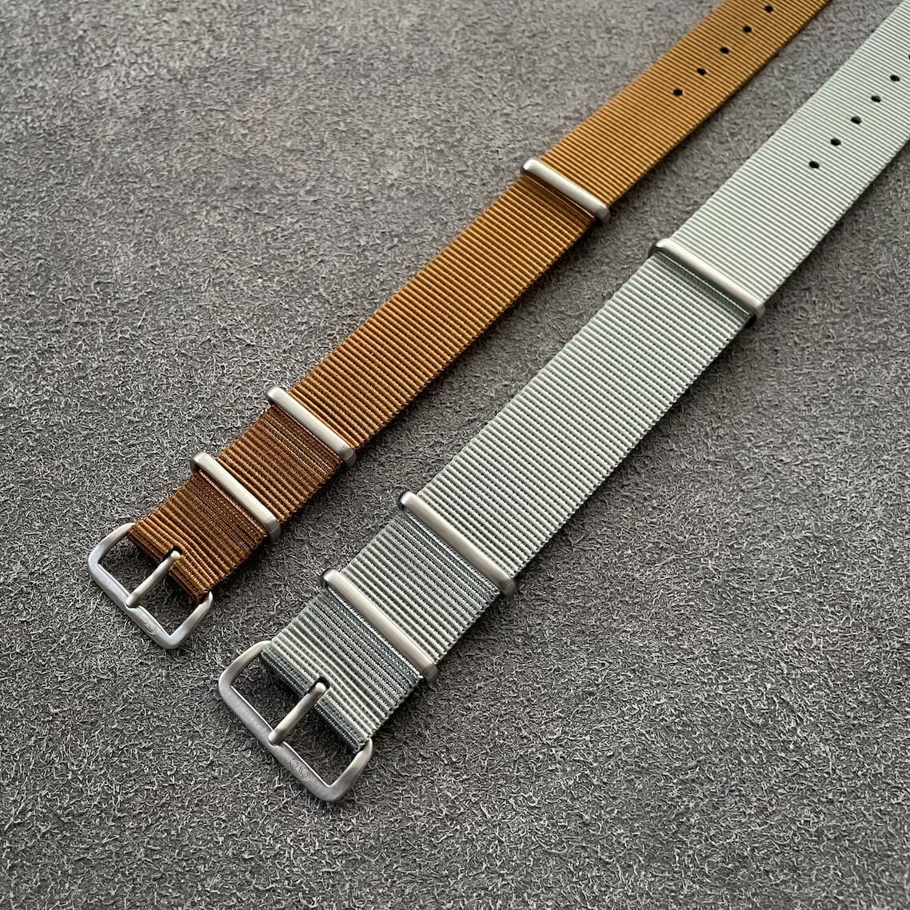
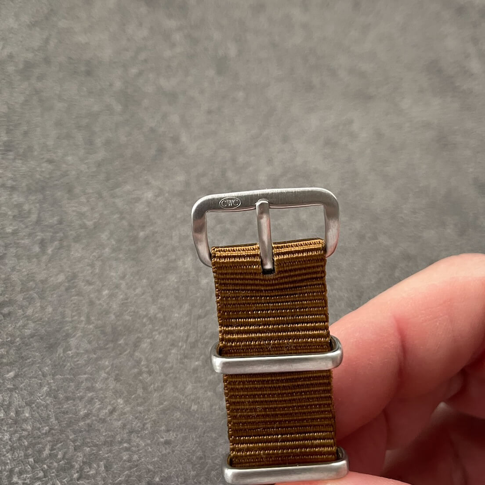
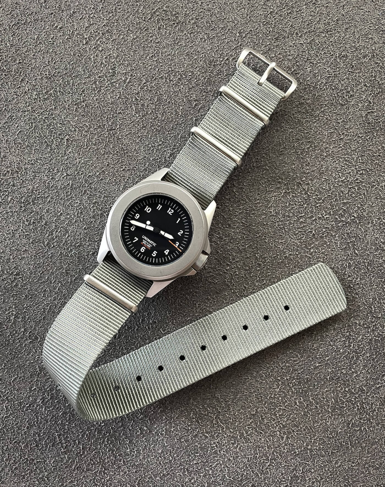
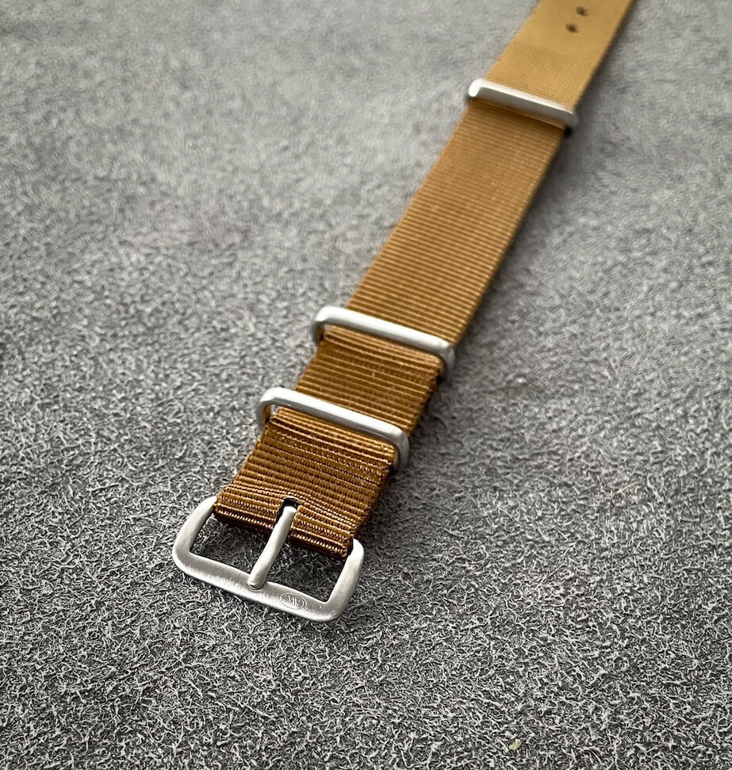
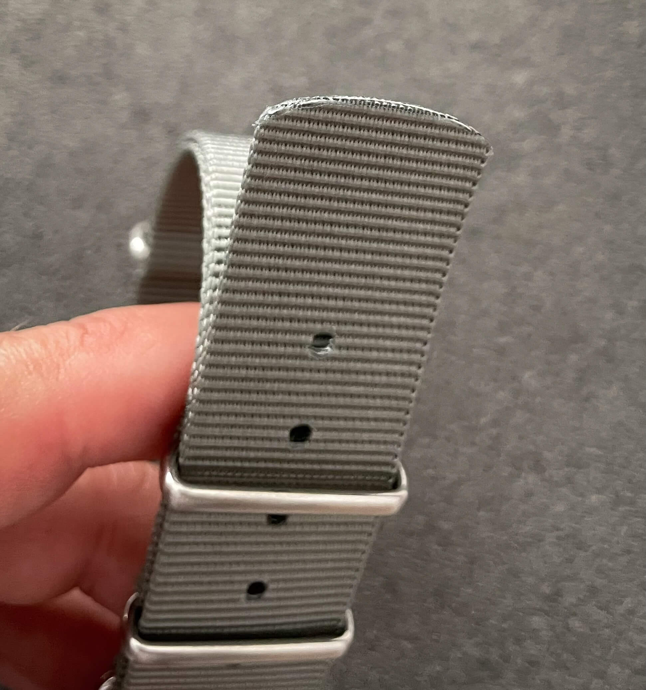
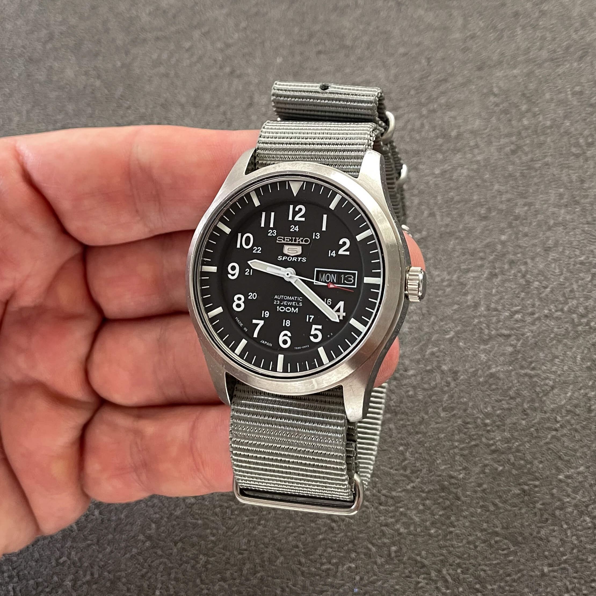
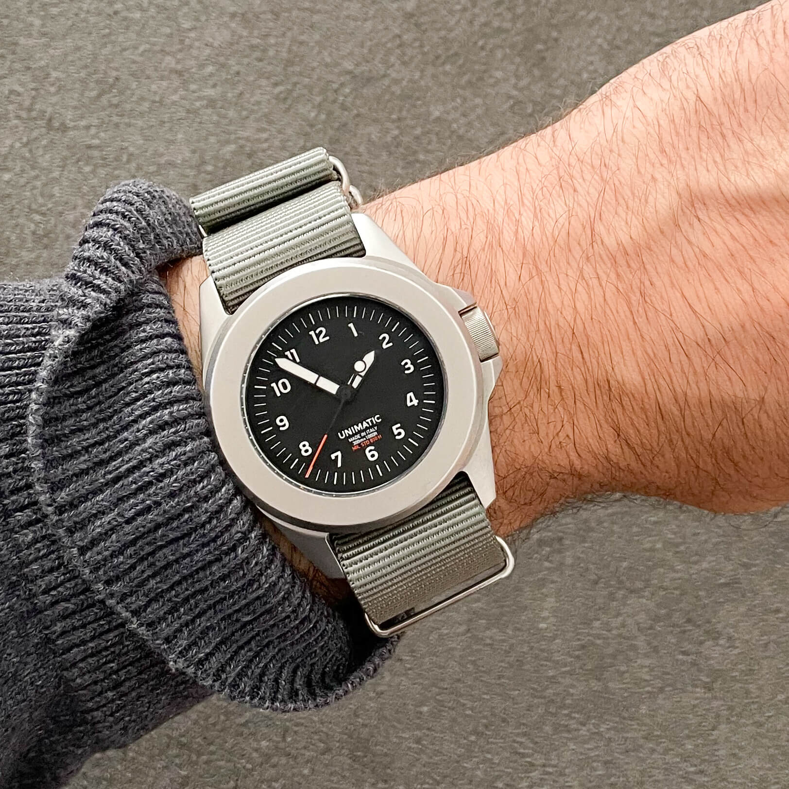

Review of the CWC British Issue Military Watch Strap
In a world flooded with "military-style" accessories, what does it mean to own the genuine piece of kit? This CWC strap isn't an homage. It's the real deal, built with the same rugged materials and specifications supplied to the British Ministry of Defence. But does that type of construction come at a cost to daily comfort? Here is our hands-on review.
 Nenad Pantelic • April 9, 2026
Nenad Pantelic • April 9, 2026

| Quality | |
| Comfort | |
| Design | |
| Durability |
The verdict: This is a genuine military strap we can actually buy! Grab a few and strap them on. They might not be as fancy as those pricey NATOs, but who cares?
What we like?
- Overall build & construction
- Matte color
- Long enough for professional use
- Extremely durable nylon
- The price
What we don't like?
- Takes some time to break-in
- Distance between holes
Full review
What is it about genuine, military-issued kit that has so powerful appeal? I’ve often questioned this. My own life is one of civilian comfort, removed from the grit these items were designed to endure. But here am I, drawn to the uncompromising functionality of military gear, from field jackets to the watches, and the simple straps that hold them in place.
The easy answer is that we value authenticity and durability. When you handle a piece of equipment made not for a fashion catalog but for a government contract, there’s an inherent honesty to it. It has been stripped of anything unnecessary and engineered to simply not fail. I appreciate well-made things, and a strap designed for the Ministry of Defence has a built-in pedigree of toughness that my desk-bound lifestyle will never truly test.
So, when I get the chance to own this genuine product, what am I really getting? Let’s take a closer look.
Technical details
| Brand | CWC |
| Tapering | None |
| Length | 285mm |
| Material | Nylon blend |
| Buckle | Stainless steel; Brushed finish |
| Keepers | Stainless steel; Heat welded |
| Edges & cut lines | Heat treated |
| Strap finishing | Matte |
The strap comes in 18, 19, 20, and 22mm sizes. You can choose from four hardware finishes (polished/matte silver and polished/matte black) and seven colors: vintage grey, military grey, tan, coyote, green, light green or black.
In short: With so many possible combinations you'll have no trouble finding a few great-looking variants to add to your collection.
Company and ordering
The Cabot Watch Company (CWC) was started in 1972 by Ray Mellor for one specific reason: to supply watches to the British military. When the previous company, Hamilton, stopped providing watches, CWC took over the contract.
CWC became known for making tough and reliable watches for all branches of the armed forces. They produced famous models like the G10, which was a standard-issue watch for soldiers, and a special diver's watch for the Royal Navy that was so good it replaced the Rolex Submariner for military use. Today, CWC still supplies some military units, but it also sells these watches and accessories to the public.
The CWC webstore runs on Shopify, so it is super easy to get around and the checkout is a breeze. I should mention that I ordered my straps before all the recent tariff changes, so your mileage may vary. That said, shipping to me here in Europe was fine, and I didn't get hit with any extra taxes or duties when they arrived.
Design and Materials
This is a typical pass-through strap. It is made from a sturdy nylon blend. The strap follows a standard construction, which means there is a second piece of nylon with an additional metal keeper. This piece of nylon prevents the watch from sliding across the strap, although, in reality, this almost never happens. All metal parts are made from stainless steel. I have the brushed-finish variant, and CWC offers a polished one as well. The buckle is signed with a small CWC logo.


The holes are not reinforced, and all the edges on this strap are heat-treated. This is a good, proven build.
The tip of the strap is cut with a less pronounced curve, similar to Phoenix straps. I like this. It's a cool touch and an homage to the original MoD strap.
One thing worth noting is the distance between the holes. The distance is larger than usual, so for some people, it might be an issue to get a perfect fit.
Comfort and Durability
When it comes to durability, this strap shines. It is a piece of genuine military gear, and its construction reflects that. The nylon blend feels sturdy, and the heat-treated edges and stainless steel hardware are built to last. After four months of use, mine has held up flawlessly. I’ve found no fraying, no tearing, and absolutely no stretching in the holes.



The flip side of this ruggedness is comfort, where I found a definite compromise. The strap felt a tad stiff on my wrist right from the start, and it didn't soften up much over the months I wore it.
The most significant challenge for me was the fit. The adjustment holes are spaced farther apart than on a typical nato strap, which made it difficult to find a sweet spot. I was constantly choosing between wearing it a bit too tight or one hole looser where the watch would slide around.
Initial Usage The strap is very well made and feels sturdy. But a bit stiff on a first few wears. I like how long it is. I can easily fold and tuck the excess end. I wish the holes were more closer together, as I wear it pretty tight, and on the next hole the watch frequently changes position.
Four months of occasional use Held up really good so far. There are no tearing, fraying or stretching of holes. The comfort didn’t improve much, but hasn’t gotten worse either.
Compatibility and Pairing Recommendation
Given its clear military provenance the CWC strap is naturally at home on tool watches. Its ideal partners are watches where function dictates form: military-issue models (like CWC's own G10 or Divers), rugged field watches, and no-nonsense dive watches.
It would even feel appropriate on a vintage-style pilot's chronograph. This is not a strap for a dress watch, though. It dresses a watch down, making it feel more like an authentic piece of gear.


Price and Value
The CWC British Issue Military Watch Strap is available directly from the CWC website within the "Straps and Accessories" category, where you can select the size, hardware finish, and color.
The strap costs between $14 and $19, depending on the configuration, which is a great value considering its quality. Mine has held up exceptionally well over four months of use.
So, is it an instant buy? It's a bit of a trade-off. What you gain in official military provenance and bombproof construction, you sacrifice in comfort. While other straps in this price range might feel better on the wrist, they lack the authentic heritage of the CWC.
My advice? Give it a try. If you appreciate gear with a genuine backstory and prioritize durability, I highly recommend giving this strap a shot to see if it works for you.
Closing words
My time with the CWC strap has been a great learning experience, and I am glad to have it in my collection. Although it’s not a perfect fit for my daily life, I deeply respect this strap for what it is: an honest, purpose-built tool that makes no apologies for its ruggedness.
Think of this strap less like a luxury SUV and more like a classic Land Rover Defender. It’s not built for polished comfort, but to be an honest, dependable tool. So grab a few for your collection.
Experiencing the genuine piece of kit offers a kind of satisfaction that a more refined alternative simply can't match.